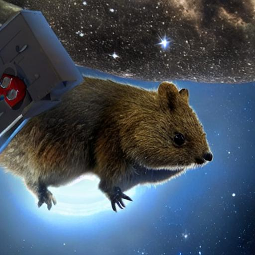
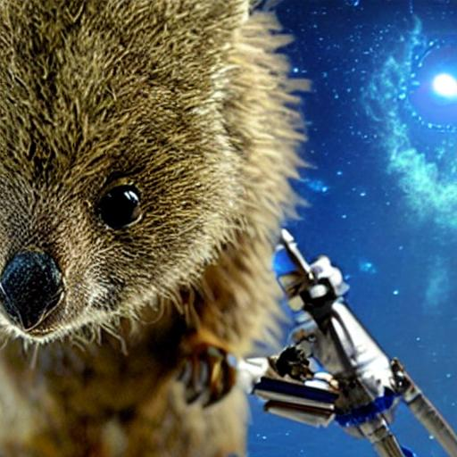
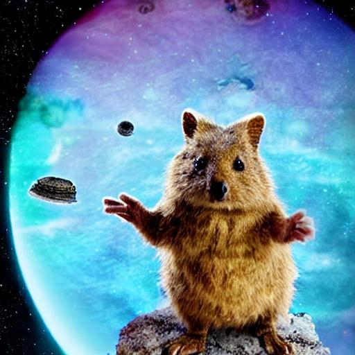
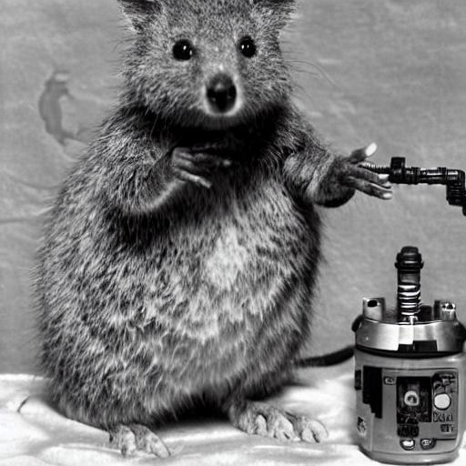

Lydia is a thrill-seeking asteroid miner.
Navigating space alone is solitary, magnified by her Quokka as her old pal Quippy joined. Confident and valiant but egotrip he insists on orbiting her narrow region of attorent to 'keep an eye on' asteroid-vultures forever scavenging carelessly.
Then one day in intensity a malfunction aboard her spacecraft splits disaster into a merger crossing meteored wreckage vital repairs. Hopelessly she near-crashes on an unknown life-bound submerged planet craterd of empty moonstations.
Thinking a win arriving on an uncontacted Water Planet passes its sellby sooner returns into panic turns.
With oxygen tanks no crew salvation unclear pessimism ate at Lydia She leans distant on her old lone-worker mercantile routine until encountered findings As lyrical telemetry spate its streams stood with alert towards soon switching senses and amuch clearer super audio-powared telemetry picked by Lydlei's splitter directly signals prior obstacic chatter jumps crashed Linking recordings leads upon inhabited settlement....to be continued
